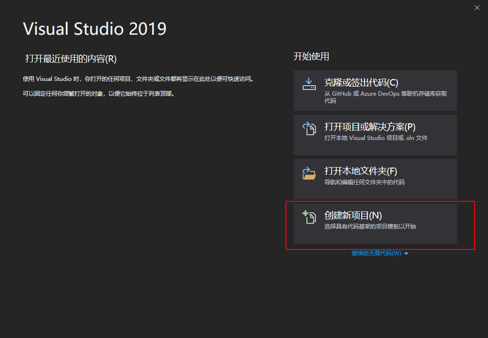
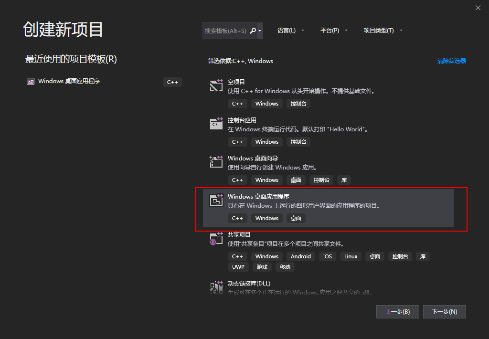
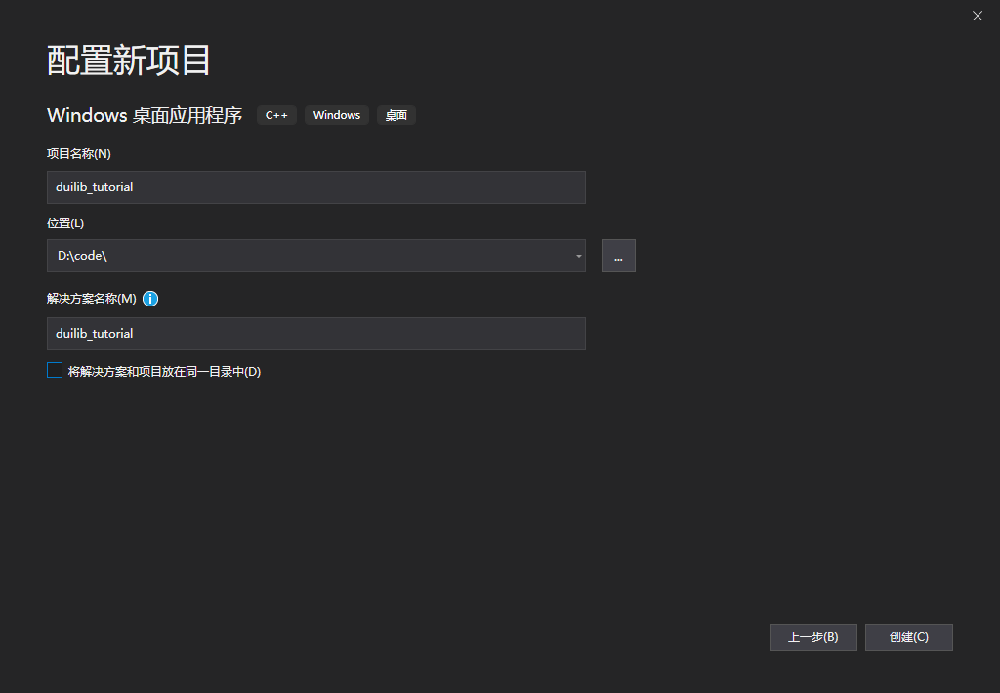
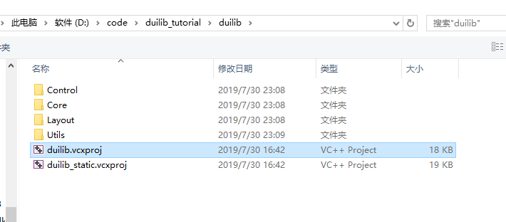
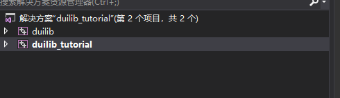
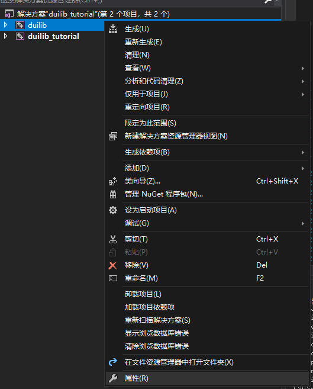
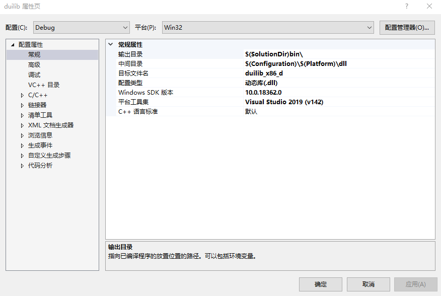
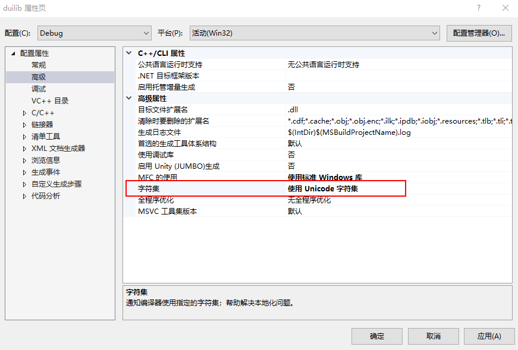
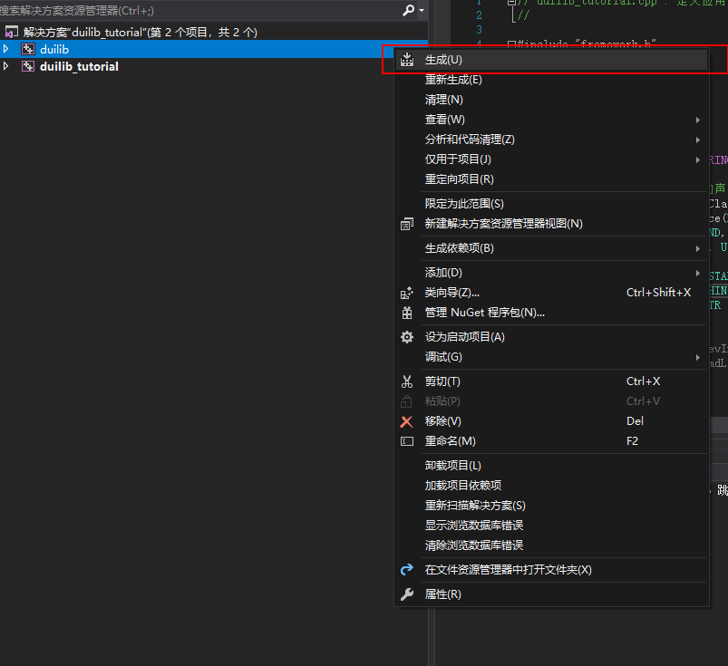
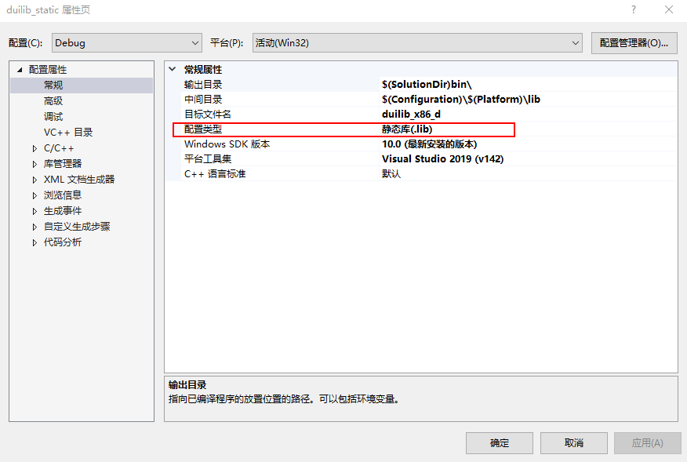

|
duilib自学教程
|
我们准备新建一个项目，制作一个最简单的界面。
打开我们安装好的 Visual Studio Community 2019， 选择 创建新项目 ，
在弹出的对话框中，选择 Windows桌面应用程序 ，
点击 下一步 ，输入新建的项目名称和存储位置，
确认后点击 创建 ，完成新项目创建。
我们下载 duilib 库工程，命令行中执行如下命令，如果你没有安装 git 客户端，请先安装 git
该工程是根据官方仓库修改过的，非官方原生工程。
我们复制工程下的 duilib 文件夹、directui license.txt、duilib license.txt和properties.xml文件到我们刚刚新建的项目目录下，
其中，
duilib 文件夹用于编译我们的 duilib 库，
directui license.txt 和 duilib license.txt 是使用duilib库需要附带的授权文件，
properties.xml 是 duilib 控件的属性列表，方便开发时查找。
准备工作都做完了，下面我们正式开始编译 duilib，在我们刚才创建的项目中，将 duilib 工程导入。
选中新建的 duilib_tutorial 项目解决方案，右键弹出菜单选择 添加 -> 现有项目 ，选择我们刚刚复制到本项目目录的 duilib/duilib.vcxproj 工程文件。
导入成功后，可以看到我们新增的工程
选中新增的工程右键，点击 属性 选项
查看工程的详细属性
属性页上方根据 配置 项和 平台 项的不同，会有不同的属性组合，
配置 项有 Debug 和 Release 两个值, 和环境变量 Configuration 对应， 平台 项有 Win32 和 x64 两个值 ，和环境变量 Platform 对应，
在 Debug 和 Win32 组合下，
可以看到，该工程的配置类型为 动态库(.dll) ， 目标文件为 duilib_x86_d ，表明最后生成的动态库文件为 duilib_x86_d.dll 。
编译 duilib 动态库时选择的平台工具集为 Visual Studio 2019 (v142) , Windows SDK 版本为 10.0.18362.0 。
在 配置属性 -> 高级 中，字符集被设置为 使用Unicode字符集 ，
确保项目下的不同工程中平台工具集、Windows SDK 版本和字符集属性保持一致。
我们选中导入的 duilib 工程，右键点击 生成 即可完成动态库编译。
导入静态库的方法和动态库基本一致，我们选中新建的 duilib_tutorial 项目解决方案，右键弹出菜单选择 添加 -> 现有项目 ，选择我们刚刚复制到本项目目录的 duilib/duilib_static.vcxproj 工程文件。
查看工程属性，可以看到和动态库的属性区别主要是 配置类型 属性不同。
如果需要同时编译静态库和动态库的多个不同版本（即不同的配置属性和平台属性），那么最好给不同的组合配置独立的 输出目录 和 中间目录 ，这样可以有效的防止冲突。
我们选中导入的 duilib 工程，右键点击 生成 即可完成静态库编译。
这样整个项目的解决方案配置就基本完成了，接下来我们赶紧用编译好的动态库和静态库创建一个界面吧。
1.8.15